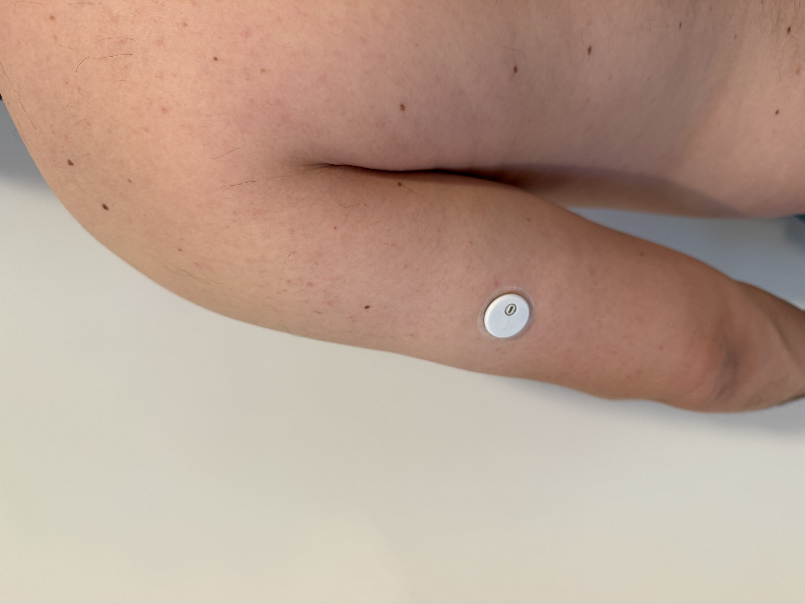
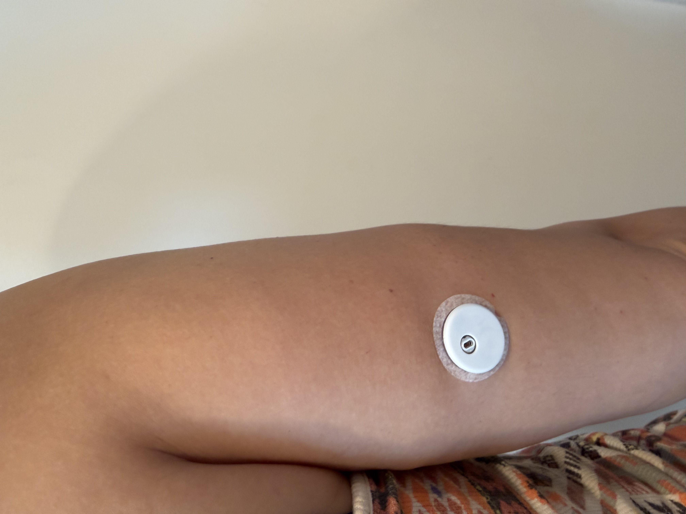

ARC ENGINE
ARC Engine connects what happened, what you did and what happened next — then uses that context to improve the next decision.

Sleep affects recovery. Recovery affects training. Training affects appetite. Meals affect hunger. Tomorrow starts with all of it.
ARC follows consequences.
The first metabolic research pilot followed two real participants through ordinary eating, activity, sleep, training and recovery.
The goal wasn’t to prove universal rules.
It was to discover which questions were worth asking.


Continuous glucose monitoring was used during the pilot as an additional observation layer — not as the foundation of the future product. ARC Engine was designed around a non-CGM core so that the system could work from signals available to ordinary users.
Similar-looking events could lead to different outcomes depending on the rest of the day.
Meal adequacy, timing and context could matter as much as an isolated glucose response.
Food and recovery could not be interpreted without knowing what training had happened — or what was still ahead.
Recovery context could alter appetite, energy and the usefulness of the original training plan.
A sequence of small choices could sometimes explain the outcome better than one isolated meal or workout.
Meals, training, hunger, sleep and recovery made more sense as a chain than as independent dashboards.
It became structured reference knowledge for ARC Engine: hypotheses the system could start from, then test against the individual user.
Tester 01 and Tester 02 became the first reference basis for ARC Engine’s metabolic knowledge layer.
Their results were not copied into a prescription for everyone.
Real users decide where it goes next.
ARC Engine starts with observed patterns, watches what happens in the individual, and earns personalization over time.
A missing response is not automatically a contradiction. One unusual day is not automatically a pattern. Personalization should come from repeated evidence.
ARC Engine powers the adaptive decision loop behind ESIVA.
See ESIVA in action ↗